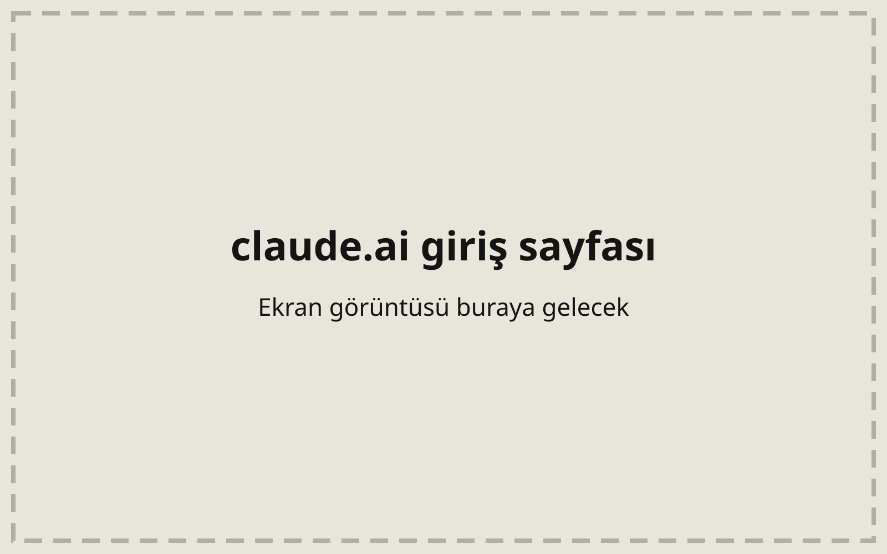

Yapay Zeka Eğitimleri, 1. hafta
Claude ile Tanışma
Yapay zekayı doğru, verimli ve güvenli kullanmaya ilk adım
Genç Kızılay ÇOMÜ Eğitim Birimi

Yapay zeka eğitimleri serisi
Dört hafta boyunca her salı yeni bir konu işleyeceğiz: yapay zeka ve Office programları. Her hafta tek başına da anlaşılır ve her eğitimin sonunda katılım belgesi veriliyor.
1. hafta, bugün
Claude ile Tanışma
Giriş yapmak, iyi soru sormak, cevabı kontrol etmek ve güvenli kullanım
2. hafta
Excel kullanımı
Tablo hazırlamak, temel formüller, sıralama, filtre ve grafikler
3. hafta
Konu yakında
Duyurularımızı takip edin
4. hafta
Konu yakında
Duyurularımızı takip edin
Bugün ne yapacağız?
Bu bir ders değil, bir atölye. Beş bölümde ilerleyeceğiz ve on üç kez kendi bilgisayarında bir şey deneyeceksin. Anlattığımız her şeyi birkaç dakika içinde uygulayacaksın.
Tanışacağız
Yapay zekanın ne olduğunu, nasıl çalıştığını konuşup Claude ile ilk sohbetimizi yapacağız.
Doğru soracağız
İyi istemin formülünü ve beş güçlü tekniği tek tek deneyerek öğreneceğiz.
Kontrol edeceğiz
Yanlış bilgiyi yakalamayı, kişisel veriyi korumayı ve bir Kızılay görevini baştan sona yapmayı öğreneceğiz.
Atölye kuralları
Doksan dakika boyunca birlikte çalışacağız. Altı küçük kural her şeyi kolaylaştırır.
Eşli çalış
Yanındakiyle fikir alışverişi serbest; takılırsan birlikte çözün.
Telefon sessizde
Kapatma: e-posta doğrulama kodu gerekebilir.
Yeni konu, yeni sohbet
Her uygulamayı temiz bir sohbette yap, konular karışmasın.
Sayaca uy
Her uygulamanın süresi ekranda; süre bitince birlikte bakarız.
Kişisel veri yok
Kendi ya da başkasının TC, telefon, adres bilgisini yazma.
Mesaj sınırı
Ücretsiz planda sınır var; dolarsa yanındakiyle devam et.
Isınma sorusu
Başlamadan önce küçük bir tahmin oyunu. Elinizi kaldırarak oy verin: Şu an izlediğiniz sunumu kim hazırladı?
Bugünün asıl konusu bu iş birliği: insan ne istediğini anlatır, yapay zeka hazırlar, insan kontrol edip düzeltir.
Yapay zekayı nerede gördünüz?
Çoğumuz farkında olmadan her gün yapay zeka kullanıyoruz. İki dakika boyunca kendi deneyimlerinizi paylaşın; hiç kullanmadıysanız da sorun yok.
Telefonun kelime önerisi ve sesli asistanlar
Fotoğraf filtreleri ve yüz tanıma
ChatGPT, Gemini, Claude gibi sohbet asistanları
1
Yapay zeka ve Claude
Yapay zeka nedir, nereden geldi, nasıl öğrenir ve Claude bu resmin neresinde duruyor?
Yapay zeka nedir?
Bilgisayarların insanlara özgü sandığımız işleri, yani anlamayı, tahmin etmeyi ve karar vermeyi yapabilmesi. Kurallar tek tek yazılmaz; sistem çok sayıda örnekten kendisi öğrenir.
Navigasyon
Anlık trafiğe bakıp seni en hızlı yoldan götürür.
Çeviri
Bir metni saniyeler içinde başka bir dile çevirir.
Öneriler
Ne izleyeceğini, ne alacağını senin geçmişine göre önerir.
Kamera
Yüzünü tanıyıp telefonunun kilidini açar.
Yapay zekanın kısa tarihi
Yapay zeka yeni bir fikir değil. Yetmiş yılı aşkın bir yolculuğun son durağındayız; son birkaç yılda ise herkesin cebine girdi.
1950
Alan Turing "Makineler düşünebilir mi?" sorusunu soruyor.
1956
Dartmouth toplantısında "yapay zeka" adı ilk kez kullanılıyor.
1997
IBM'in Deep Blue bilgisayarı satranç şampiyonu Kasparov'u yeniyor.
2016
AlphaGo, Go oyununda dünya şampiyonu Lee Sedol'u yeniyor.
2022–23
ChatGPT ve Claude ile sohbet eden yapay zeka herkesin kullanımına açılıyor.
Makine nasıl öğrenir?
Bir çocuğa kediyi tarif etmek yerine yüzlerce kedi resmi gösterirsin; bir süre sonra hiç görmediği bir kediyi de tanır. Makine öğrenmesi de böyle çalışır.
Eski yol: kural yazmak
- "Dört ayağı, bıyığı, kuyruğu varsa kedidir."
- Köpek de bu kurala uyuyor, hata çıkıyor.
- Her istisna için yeni kural gerekiyor.
Yeni yol: örnekten öğrenmek
- Binlerce "kedi" ve "kedi değil" resmi verilir.
- Sistem farkı kendisi bulur.
- Ne kadar çok ve iyi örnek, o kadar iyi sonuç.
Üretken yapay zeka
Klasik yapay zeka tanır ve sınıflandırır. Üretken yapay zeka ise yepyeni bir şey üretir: bir metin, bir görsel, bir ses ya da bir kod. Claude bu türden bir sohbet asistanı.
Ne üretebilir?
- Duyuru, özet, e-posta, rapor
- Liste, tablo, plan, program
- Görsel, ses ve bilgisayar kodu
Bilinen sohbet asistanları
- Claude (Anthropic)
- ChatGPT (OpenAI), Gemini (Google)
- Copilot (Microsoft)
Nasıl çalışır?
Telefon klavyen yazarken bir sonraki kelimeyi tahmin eder. Bunu, daha önce yazdıklarından öğrendiği için yapabilir:
Yarın sabah erkenden kalkıpokulagideceğim
Claude da aynı fikirle çalışır, ama milyonlarca kitap, makale ve web sayfası okuyarak öğrendiği için tek kelimeyi değil; cümleleri, paragrafları, hatta bütün bir planı tahmin edebilir. Bilgiyi bir veritabanından okumaz, en olası cevabı yazar.
Dil modeli ve bilgi sınırı
Claude bir büyük dil modeli. Bu ifadenin arkasında, onu doğru kullanmak için bilmen gereken dört gerçek var.
Parça parça okur
Metni "token" denen küçük parçalara böler; bir token çoğu zaman bir kelimeden kısadır.
Okuduğundan öğrenir
Eğitimi sırasında okuduğu metinlerdeki kalıpları öğrenir; ezberden değil, tahminle yazar.
Bilgisinin bir tarihi var
Belirli bir tarihe kadarki verilerle eğitilir; sonrasındaki olayları bilmeyebilir.
Her zaman internete bakmaz
Web araması yapmadığında güncel haberleri, son kararları bilemez.
Claude nedir?
Anthropic şirketinin geliştirdiği yapay zeka asistanı; 2023'ten beri kullanımda.
Türkçe dahil birçok dilde akıcı biçimde konuşur ve yazar.
Tarayıcıda (claude.ai), telefon uygulamasında ve bilgisayar uygulamasında çalışır.
PDF, belge ve fotoğraf okuyabilir; uzun metinleri özetleyebilir.
Ücretsiz planla başlanır; ücretsiz planda mesaj sınırı vardır.

Ekranda bu turuncu yıldızı gördüğün yer Claude.
Neler yapabilir, nelere dikkat?
Claude çok güçlü bir yardımcı, ama bir uzman ya da bir arama motoru değil. İki tarafı da bilmek, onu doğru yerde kullanmamızı sağlar.
Yapabilir
- Metin yazar, düzeltir, sadeleştirir
- Özetler, açıklar, çevirir
- Fikir, liste ve plan üretir
- Sabırla tekrar tekrar anlatır
Dikkat
- Yanılabilir, bilgi uydurabilir
- Her konuda güncel bilgisi yoktur
- Duygu ve yaşantısı yoktur
- Son karar ve sorumluluk sende
Boşluğu doldur
İlk bölümü beş cümleyle özetleyelim. Cevabı sesli söyleyin, sonra birlikte kontrol edelim.
Makine öğrenmesinde sistem kuralları değil, kullanır.
Claude bir sonraki kelimeyi ederek yazar.
Üretken yapay zeka yeni bir şey : metin, görsel, ses.
Claude'un bilgisinin bir vardır; son olayları bilmeyebilir.
Claude da yapabilir, bu yüzden cevabı ederim.
2
Claude ile tanış
Bilgisayara gir, Claude'u aç, ilk mesajını gönder ve sohbetin nasıl yürüdüğünü keşfet.
1. Adım: Bilgisayara giriş

- Tarayıcıda açılan kampüs ağı giriş sayfasına TC kimlik numaranı yaz
- UBYS şifreni yaz
- Giriş düğmesine tıkla
Şifreni hatırlamıyorsan el kaldır; yanındakiyle eşli çalışabilirsin. Görsel temsilidir.
2. Adım: Claude'a giriş

- Adres çubuğuna claude.ai yazıp Enter'a bas
- Hesabını nasıl açtıysan öyle gir: Google ya da e-posta
- E-postana gelen kodu gir; mesaj kutusunu görüyorsan tamamsın
Tarayıcı "şifreyi kaydet" diye sorarsa Hayır de: bu ortak bir bilgisayar.
3. Adım: Claude ekranını tanı
 1
2
3
1
2
3
- Mesaj kutusu: sorunu ya da isteğini buraya yazarsın
- Gönder: ok düğmesine tıkla ya da Enter'a bas
- Yeni sohbet: her yeni konu için temiz bir sayfa aç
Alt satıra geçmek için Shift + Enter kullan.
Sıra sizde, 3 dakika
İlk mesajını gönder
___ yerine kendi adını yazarak gönder. Cevap gelince oku; bir kişiyi sesli okumak için seçeceğiz.
Sıra sizde, 3 dakika
Claude'a kendini anlattır
Aynı sohbette devam et. Claude'un neler yapabildiğini ondan öğren ve listeden seni en çok şaşırtanı seç.
Sohbet nasıl yürür?
Claude ile konuşmak bir mesajlaşmaya benzer. Ama birkaç küçük özellik, işini çok kolaylaştırır.
Sohbet hafızası
Aynı sohbetteki her mesajı hatırlar; "bunu daha kısa yap" demen yeterli.
Yeniden dene
Cevabı beğenmezsen yeniden oluşturmasını isteyebilirsin; her seferinde farklı yazar.
Mesajını düzenle
Kendi mesajındaki bir hatayı düzeltip yeniden gönderebilirsin.
Kopyala
Cevabın altındaki düğmeyle metni kopyalayıp Word'e ya da WhatsApp'a yapıştır.
3
İyi soru sormak
Bir formül ve beş teknik; her birini anlatıp hemen deneyeceğiz. Bugünün en uzun ve en önemli bölümü.
İyi istemin formülü
İstem, Claude'a yazdığın mesaj demek. Yeni gelen bir gönüllüye iş tarif ettiğini düşün: üç soruya cevap verirsen ne istediğini tam anlar.
Kim için?
Metni kim okuyacak? Öğrenciler mi, gönüllüler mi, bir öğretmen mi?
Ne?
Tam olarak ne istiyorsun? Duyuru mu, liste mi, e-posta mı?
Nasıl?
Uzunluk, ton ve biçim: kaç cümle, samimi mi resmî mi, madde mi?
Hangisi daha iyi?
Aynı konu, iki farklı istem. Önce okuyun, sonra hangisinin daha iyi bir cevap getireceğini tahmin edin.
A
B
B neden daha iyi?
Elinizi kaldırarak oy verin. Doğru cevabı bulan, formülü anlamış demektir.
Sıra sizde, 4 dakika
Farkı kendin gör
1. Önce A'yı gönder:
2. Yeni sohbet aç, B'yi gönder ve iki cevabı karşılaştır:
Kim için? Aynı konu, üç okuyucu
Aynı bilgiyi kime anlattığına göre kelimeler, örnekler ve uzunluk tamamen değişir. Claude'a okuyucuyu söylersen anlatımını ona göre ayarlar.
10 yaşında çocuk
Kısa cümleler, günlük hayattan benzetmeler, hiç teknik terim yok.
Lise öğrencisi
Biraz daha ayrıntı, okulda duyduğu kavramlarla bağlantı.
Bilgisayar mühendisi
Teknik terimler, kısa ve yoğun anlatım, ayrıntıya girme.
Sıra sizde, 3 dakika
Üç farklı okuyucu
Yeni bir sohbet aç ve gönder. Üç açıklamanın kelime seçimini ve uzunluğunu karşılaştır.
Rol ver
Claude'a bir rol verdiğinde, o rolün bilgisiyle ve diliyle cevap verir. "Sen bir ... gibi davran" demek, kime danıştığını seçmek gibidir.
Sen AFAD'da çalışan deneyimli bir afet eğitmenisin. Üniversite öğrencilerine deprem çantasında neler olması gerektiğini, nedenleriyle birlikte anlat.
Bir afet eğitmeni olarak önceliğim ilk 72 saat. Çantanızda su, dayanıklı yiyecek, ilk yardım malzemesi, el feneri ve yedek pil olmalı; çünkü...
Sıra sizde, 3 dakika
Rol deneyi
Önce rolsüz, sonra yeni sohbette rollü sor. Hangisi daha öğretici?
Biçim söyle
Aynı bilgi bir paragraf, bir liste ya da bir tablo olarak gelebilir. Nasıl kullanacaksan o biçimi iste; Claude metni ona göre düzenler.
Liste
"5 maddelik bir liste hâlinde yaz." Hızlı okunacak şeyler için.
Tablo
"Öneri, neden, örnek sütunlu bir tablo yap." Karşılaştırma için.
Uzunluk
"En fazla 50 kelime." Sosyal medya ve mesajlar için.
Sıra sizde, 3 dakika
Biçim deneyi
Aynı sohbette sırayla gönder ve aynı bilginin nasıl değiştiğine bak:
Örnek göster
İstediğini tarif etmek zorsa, bir iki örnek göster. Claude örneklerin tarzını, uzunluğunu ve tonunu yakalayıp aynı çizgide devam eder.
Şu iki slogan gibi 5 yeni kan bağışı sloganı yaz: "Bir ünite kan, üç hayat." ve "Damarındaki iyilik, birinin yarını."
1. "Bir dakikan, birinin ömrü." 2. "Kolunu uzat, umudu büyüt." 3. ...
Sıra sizde, 3 dakika
Örnekle öğret
Gönder, sonra en beğendiğin sloganı seç. İstersen kendi iki örneğini yazıp aynı şeyi tekrar dene.
Önce sana sorsun
Ne istediğini tam bilmiyorsan ya da bilgi eksikse, Claude'dan yazmaya başlamadan önce sana soru sormasını iste. Tahmin etmek yerine öğrenir, cevap ilk seferde tutar.
Nasıl istenir?
- "Yazmadan önce bana 3 soru sor."
- "Eksik bilgi varsa önce sor."
- "Önce bir plan çıkar, onaylarsam yaz."
Ne zaman işe yarar?
- Davet, duyuru, etkinlik planı
- Tarih, yer, kişi gibi ayrıntı gerekiyorsa
- Ne istediğinden emin değilsen
Sıra sizde, 4 dakika
Önce bana sor
Gönder; Claude'un sorduğu 3 soruyu kendi bilgilerinle cevapla ve davet metnini al:
Gerçek bir kişinin telefonunu ya da adresini yazma; yer olarak "Teknik Bilimler MYO" yeterli.
Altı altın ipucu
Şimdiye kadar denediklerimizin özeti. Hepsini aynı anda kullanmak zorunda değilsin; işe göre ikisini üçünü seçmen yeterli.
Bağlam ver
Kim olduğunu ve durumu anlat: "Genç Kızılay gönüllüsüyüm..."
Rol ver
"Deneyimli bir afet eğitmeni gibi cevap ver."
Örnek göster
Beğendiğin bir metni ekle: "Buna benzer olsun."
Biçim söyle
Liste mi, tablo mu, kaç madde, kaç kelime?
Adım adım iste
"Önce bir plan çıkar, onaylarsam yaz."
Sormasına izin ver
"Eksik bilgi varsa önce bana sor."
Hepsi bir arada: örnek sohbet
İpuçlarını tek bir istemde birleştirince ne olduğuna bakalım: rol, hedef kitle, konu ve biçim bir arada.
Sen deneyimli bir ilk yardım eğitmenisin. Üniversite öğrencilerine, deprem anında yapılacakları 4 maddelik kısa bir liste hâlinde anlat.
- Çök: Olduğun yerde yere çök.
- Kapan: Sağlam bir masanın altına gir, başını ve enseni koru.
- Tutun: Sarsıntı bitene kadar tutun.
- Sarsıntı bitince sakin ol, asansörü değil merdiveni kullan.
Beğenmedin mi? Sohbete devam et
İlk cevap bir taslaktır. Baştan başlamana gerek yok: Claude aynı sohbetteki önceki mesajları hatırlar, sen sadece neyi değiştirmek istediğini söyle.
Daha kısa yap ve 2 emoji ekle.
Tabii! İşte daha kısa ve emojili hâli...
Şimdi aynı metni daha resmî bir dille yaz.
Sıra sizde, 3 dakika
Cevabı 2 kez düzelttir
Kan bağışı duyurusunun ya da davet mesajının altına sırayla yaz, her seferinde metnin nasıl değiştiğine bak:
Formülü tamamla
Üçüncü bölümün özeti. Cevapları birlikte söyleyelim.
İyi istem: için? + ? + ?
Rol ver: "Deneyimli bir afet gibi cevap ver."
Biçim söyle: "Cevabı 5 maddelik bir hâlinde ver."
Emin değilsen: "Yazmadan önce bana sor."
İlk cevabı beğenmezsem ederim.
4
Kontrol et, güvenli kullan
Claude çok yardımcıdır, ama doğruluk, adalet ve gizlilik konusunda sorumluluk her zaman bizde.
Claude da yanılabilir
Claude en olası cevabı yazdığı için, bilmediği bir yerde de akla yatkın bir şey uydurabilir ve bunu kendinden emin bir dille söyler. Buna halüsinasyon denir.
En çok nerede olur?
Tarihlerde, sayılarda, kişi ve kurum isimlerinde, kaynak ve kitap adlarında.
Ne yapmalı?
Önemli bilgiyi başka bir kaynaktan kontrol et, özellikle başkasıyla paylaşacaksan.
Claude yalan söylemez, ama yanılabilir. Düzgün yazılmış bir cevap, doğru olduğu anlamına gelmez.
Hatayı bul
Claude'dan aşağıdaki gibi bir cevap geldiğini düşünün. Cümleler düzgün, ton emin. Peki içinde yanlış bir bilgi var mı?
1923 değil, 1868. Kızılay, Osmanlı döneminde İstanbul'da kuruldu. Bunu kizilay.org.tr'deki tarihçe sayfasından doğrulayabilirsin.
Sıra sizde, 4 dakika
Halüsinasyon avı
Yeni sohbette sor, cevabı not al, sonra ikinci mesajı gönder:
İpucu: Okulun logosunda kuruluş yılı yazıyor. Kişi adını ise okulun resmî sitesinden kontrol etmek gerekir.
Cevabı nasıl kontrol ederim?
Önemli bir bilgiyi başkasına aktarmadan önce üç adımda doğrularız. Çoğu zaman birinci adım yeterlidir.
- Resmî kaynağa bakTarih, sayı, isim ve kurallar için kurumun kendi sitesine git: kizilay.org.tr, afad.gov.tr, e-Devlet.
- Claude'a geri sor"Bundan emin misin? Hangi kaynağa dayanıyorsun?" diye sor. Çoğu zaman belirsiz noktayı kendisi söyler.
- Bir uzmana danışSağlık, hukuk ve para konularında son sözü her zaman bir uzman söyler, yapay zeka değil.
Kural: Bir bilgiyi başkasına aktaracaksan, önce doğrula.
Önyargıya dikkat
Claude insanların yazdığı metinlerden öğrendiği için, o metinlerdeki önyargıları da yansıtabilir. Kimseyi dışlamayan bir dil kullanmak da bizim sorumluluğumuz.
Nasıl görünür?
- Bir mesleği tek bir cinsiyetle anlatmak
- Bir bölgeyi ya da grubu kalıp yargıyla tarif etmek
- Hep aynı tür insanları örnek vermek
Ne yapmalı?
- Metni yayımlamadan önce bu gözle oku
- "Kapsayıcı bir dille yaz" diye iste
- Kızılay'ın tarafsızlık ilkesini hatırla
Claude'a asla yazma
Claude'a yazdığın her şey bir sunucuya gider. Kendi bilgilerin de, başkasının bilgileri de sana emanettir.
Kişisel bilgiler
- TC kimlik numarası
- Telefon, adres, doğum tarihi
- Şifreler ve kart bilgileri
Kızılay'da
- Afetzedelerin kimlik ve adresleri
- Bağışçıların sağlık bilgileri
- Gönüllülerin iletişim bilgileri
Kural: "Bunu bir yabancıya söyler miydim?" Hayırsa yazma. Gerçek isim yerine "[isim]" yaz, sonra kendin doldur.
Sıra sizde, 3 dakika
Kişisel veriyi temizle
Aşağıdaki istemi olduğu gibi gönderme. Önce kişisel verileri [isim], [telefon] gibi yer tutucularla değiştir, sonra gönder:
Bilgiler uydurmadır. Doğru cevap: isim, TC, telefon ve adres yerine yer tutucu yazmak.
Hangisini Claude'a yazabilirim?
Dört istem var. Her birini okuyup "yazabilirim" ya da "yazamam" diye oy verin. Birden fazla doğru cevap olabilir.
Öğrenmek için kullan
Claude'u yanında sabırlı bir öğretmen gibi düşün. Ödevini onun yazması sana bir şey kazandırmaz; sana öğretmesi ise çok şey kazandırır.
Öğrenmeni hızlandırır
- Anlamadığın konuyu basitçe açıklat
- Kendini sına: "Bana 5 soru sor"
- Kendi taslağını geliştirmesini iste
Öğrenmeni engeller
- Ödevi kopyalayıp teslim etmek
- Okumadan, kontrol etmeden paylaşmak
- Düşünmeyi tamamen ona bırakmak
Sıra sizde, 4 dakika
Claude seni sınasın
Yeni sohbet aç ve gönder. Soruları tek tek cevapla; Claude her cevabını değerlendirecek.
5
Öğrendiğini kullan
Bir Kızılay gönüllüsü olarak gerçek bir işi Claude ile birlikte baştan sona yap.
Kızılay'da yapay zeka
Gönüllülük çalışmalarında yapay zekanın zaman kazandırabileceği pek çok iş var. Her birinde aynı kural geçerli: kişisel veri yok, son kontrol bizde.
Duyuru ve afiş
Kan bağışı, eğitim, toplantı duyuruları
Etkinlik planı
Görev listesi, zaman çizelgesi, kontrol listesi
Eğitim materyali
İlk yardım, afete hazırlık için sade anlatımlar
Toplantı özeti
Uzun notları kısa karar listesine çevirmek
Çeviri taslağı
Bilgilendirme metinlerinin İngilizce ya da Arapça taslağı
Fikir üretmek
Proje, slogan, sosyal medya fikirleri
Mini proje: nasıl çalışacağız?
Son uygulama bugünün bütün parçalarını birleştiriyor. Dört adımı sırayla izle; acele etme, kalite önemli.
- SeçÜç görevden birini seç: deprem çantası, kan bağışı ya da yeni gönüllü.
- YazFormülü kullan; rol, biçim ya da örnek ipuçlarından en az ikisini ekle.
- GeliştirCevabı en az bir kez sohbetle düzelttir.
- Kontrol etBilgileri resmî kaynakla karşılaştır, kişisel veri olmadığından emin ol.
Sıra sizde, 7 dakika
Kızılay görevi
Birini seç; formülü ve en az iki ipucunu kullan, sonra cevabı bir kez düzelttir:
Deprem çantası kontrol listesi
Kan bağışı kampanyası duyurusu
Yeni gönüllüye hoş geldin mesajı
Sonuçlarımızı paylaşalım
İki üç gönüllü sonucunu sesli okusun. Her paylaşımdan sonra birlikte şunlara bakalım:
- İstemine ne yazdın, hangi ipuçlarını kullandın?
- Sonradan neyi düzelttirdin, metin nasıl değişti?
- Cevapta kontrol etmen gereken bir bilgi var mıydı?

Mini sözlük
Bugün kullandığımız altı kavram. Gelecek haftalarda da bu kelimelerle konuşacağız.
- Yapay zeka
- Bilgisayarın çok sayıda örnekten öğrenip tahmin ve karar üretmesi
- Dil modeli
- Metinlerden öğrenip bir sonraki kelimeyi tahmin ederek yazan yapay zeka; Claude böyle bir model
- İstem
- Claude'a yazdığın mesaj; isteğini anlattığın metin
- Halüsinasyon
- Yapay zekanın emin bir dille yanlış ya da uydurma bilgi vermesi
- Önyargı
- Eğitim verisindeki kalıp yargıların cevaplara yansıması
- Kişisel veri
- Birini tanımlayan bilgi: TC no, telefon, adres, sağlık bilgisi
Çıkış quizi
Son kontrol: üç soru, hep birlikte cevaplıyoruz.
1. İyi istemin formülü: Kim için + Ne +
2. "Claude'un cevabı düzgün yazılmışsa her zaman doğrudur."
3. Afetzedelerin kimlik bilgilerini Claude'a .
Çıkış quizi, ikinci tur
Üç soru daha. Bu sefer bugünün tekniklerinden.
4. "Sen deneyimli bir afet eğitmenisin" demek, Claude'a bir vermektir.
5. Claude'un bilmediği yerde emin bir dille uydurmasına ne denir?
6. Bilgi eksikse Claude'a "Yazmadan önce bana sor" derim.
Bugün öğrendiklerimiz
Doksan dakikada on üç uygulama yaptık. Bugünden aklında kalması gereken üç şey:
- Yapay zeka örneklerden öğrenir ve en olası cevabı yazar; bu yüzden bazen yanılır ve bilgisinin bir tarihi vardır.
- İyi istem: Kim için + Ne + Nasıl. Rol ver, biçim söyle, örnek göster, gerekirse önce sana sorsun, sonra sohbetle geliştir.
- Cevabı resmî kaynakla kontrol et, önyargıya dikkat et, kişisel veriyi asla yazma.
Gelecek haftaya kadar
Öğrendiğini unutmamanın en iyi yolu kullanmak. Gelecek salıya kadar şu üç küçük görevi dene; sonuçlarını derste konuşacağız.
Ders için
Zorlandığın bir konuyu "lise öğrencisine anlatır gibi" açıklat, sonra "bana 5 soru sor" de.
Kızılay için
Bir etkinlik duyurusu yazdır, iki kez düzelttir ve bilgileri kontrol et.
Merak için
Claude'u bir halüsinasyonda yakala ve hangi kaynakla doğruladığını not al.
Gelecek hafta: Excel kullanımı. Tablo, formül ve grafiklerle çalışmayı yine bilgisayar başında, uygulamalı öğreneceğiz.
Teşekkürler!
Katılım belgeleri Genç Kızılay ÇOMÜ tarafından iletilecek. Sorularını şimdi sorabilir, sunuma karekoddan istediğin zaman yeniden bakabilirsin.
Çıkmadan önce Claude'dan ve Google hesabından çıkış yap! Bu bilgisayarları başkaları da kullanıyor.
Fotoğraflar: genckizilay.org.tr. İkonlar: Lucide (ISC lisansı). Ekran görselleri temsilidir.

Sunuma tekrar bak